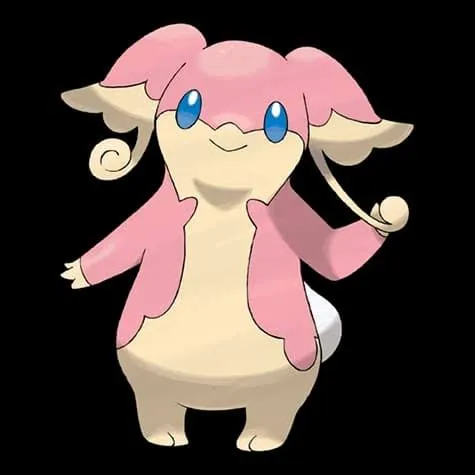
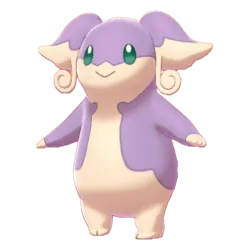
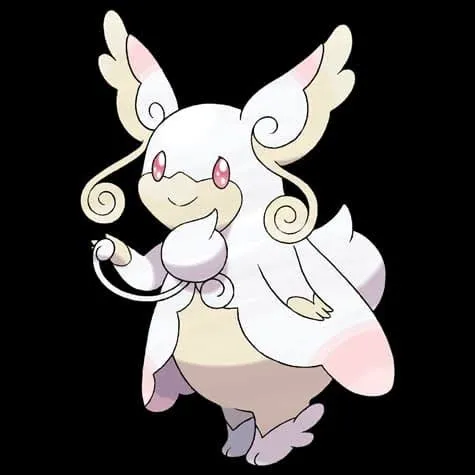

🧭 Quick Navigation
📖 Introduction
Mega Audino is the Mega Evolution of Audino and appears in Mega Raids in Pokémon GO. Although it does not deal extremely high damage compared to other Mega Raid bosses, its strong defensive stats allow it to stay in battle for a long time.
Because Mega Audino combines Normal and Fairy typing, it has very few weaknesses. However, Poison-type and Steel-type Pokémon can exploit these weaknesses effectively and deal heavy damage during raids.
Mega Audino is useful because:
- It boosts Normal and Fairy-type attackers
- It is helpful against Dragon, Dark, and Fighting-type raid bosses
This raid guide explains everything trainers need to know to defeat Mega Audino, including its weaknesses, the best counters, movesets, catch CP ranges, weather boosts, and useful strategies for completing the raid quickly.
📊Mega Audino Stats
| Type | Normal / Fairy |
| Max CP | 2853 |
| Weather Boost | Partly Cloudy, Cloudy |
| Shiny | Yes |
| Base Atttack | 147 |
| Base Defence | 239 |
| Base Stamina | 230 |
Mega Audino is known more for defense and support rather than attack power.
🎯 Catch CP & 100% IV
After defeating Mega Audino, you will encounter a normal Audino.
CP Range:
- No Weather Boost: 1369-1442 CP
- Weather Boost: 1712-1802 CP CP
100% IV:
- 1442 (Normal)
- 1802 (Weather Boosted)
Use:
- Golden Razz Berry
- Curveball Excellent Throws
⚠️ Mega Audino Weaknesses
Mega Audino is weak to only two types:
| Category | Details |
|---|---|
| ❌ Weak To: |
 Steel • Steel •
 Poison Poison
|
| ✅ Resistant / Immune To: |
 Bug • Bug •
 Dark • Dark •
 Dragon • Dragon •
 Ghost Ghost
|
Notes:Dragon-type Pokémon should be avoided entirely, as Fairy typing significantly reduces their damage output. Instead, focus on Steel or Poison-type attackers for maximum efficiency.
🗡️ Best Counters for Mega Audino
The best way to defeat Mega Audino is to use strong Steel-type and Poison-type Pokémon.
🥇 Steel-Type Counters (Top Priority)
Steel-type Pokémon are the most reliable option against Mega Audino. They deal super-effective damage and typically offer strong bulk, allowing them to survive longer in battle. Pokémon with Steel-type fast and charged moves provide consistent DPS and stability.
- Use Steel fast moves like Bullet Punch or Metal Claw
- Pair with charged moves such as Meteor Mash or Flash Cannon
- Mega Steel Pokémon boost team-wide Steel damage
- White Kyurem: (Steel Wing)
- Genesect: (Metal Claw / Magnet Bomb)
- Aggron: (Iron Tail / Heavy Slam)
🥈 Poison-Type Counters (Strong Secondary Option)
Poison-type attackers are also super effective and can deal excellent damage. They may be slightly less bulky than Steel-types but still perform very well, especially in favorable weather.
- Use fast moves like Poison Jab
- Charged moves such as Sludge Bomb maximize output
- Weather boost under Cloudy conditions increases damage
- Roserade: (Poison Jab / Sludge Bomb)
- Gengar: (Sludge Bomb)
🏆 Best Regular Counters
Regular pokemon that amplify the right types give you a powerful edge. Below are top Regular counters with short notes on why they excel.
| Pokémon | 🗡️ Fast Moves | 💥 Charged Moves | 🔄 Elite Moves | 🏆 Best Moves | 🧪 Why This Counter Works |
|---|---|---|---|---|---|
| Zacian | Metal Claw / Air Slash | Play Rough / Close Combat / Giga Impact / Behemoth Blade | None | Metal Claw and Behemoth Blade | Steel-type fast and charged moves deal super-effective damage to Mega Audino’s Fairy typing while maintaining strong overall DPS. |
| Keldeo(Resolute) | Low Kick / Poison Jab | Close Combat / Sacred Sword / X-Scissor / Aqua Jet / Hydro Pump | None | Poison Jab and Hydro Pump | Poison Jab provides super-effective damage against Fairy typing, offering steady DPS despite limited bulk. |
| Roserade | Poison Jab / Poison Sting / Razor Leaf / Magical Leaf | Sludge Bomb / Solar Beam / Grass Knot / Leaf Storm | Bullet Seed / Weather Ball | Poison Jab and Sludge Bomb | Poison Jab and Sludge Bomb hit Mega Audino super-effectively, making Roserade one of the strongest Poison attackers. |
| Zamazenta | Metal Claw / Ice Fang | Moon Blast / Close Combat / Giga Impact / Behemoth Bash | None | Metal Claw and Behemoth Bash | Steel-type coverage allows it to deal super-effective damage while maintaining good survivability. |
| Dusk Mane Necrozma | Shadow Claw / Metal Claw / Psycho Cut | Dark Pulse / Iron Head / Future Sight / Outrage / Sunsteel Strike | None | Metal Claw and Sunsteel Strike | Metal Claw and Sunsteel Strike deliver extremely strong Steel-type DPS against Mega Audino’s Fairy typing. |
| Eternatus | Poison Jab / Dragon Tail | Flamethrower / Dragon Pulse / Sludge Bomb | Dynamax Cannon | Poison Jab and Sludge Bomb | Poison-type attacks hit Mega Audino’s Fairy typing super-effectively while benefiting from Eternatus’s high attack stat. |
| Metagross | Fury Cutter / Bullet Punch / Zen Headbutt | Earthquake / Flash Cannon / Psychic | Shadow Claw / Meteor Mash | Bullet Punch and Meteor Mash | Bullet Punch and Meteor Mash provide top-tier Steel-type DPS, making it one of the most efficient counters available. |
| Nihilego | Pound / Acid / Poison Jab | Gunk Shot / Sludge Bomb / Power Gem / Rock Slide | None | Poison Jab and Sludge Bomb | Poison Jab and Sludge Bomb deal heavy super-effective Poison damage with excellent offensive stats. |
| Naganadel | Air Slash / Poison Jab | Acrobatics / Sludge Bomb / Fell Stinger / Dragon Pulse / Dragon Claw | None | Poison Jab and Sludge Bomb | Poison Jab and Sludge Bomb apply fast super-effective pressure against Fairy typing. |
| Lucario | Counter / Bullet Punch | Close Combat / Power-Up Punch / Aura Sphere / Shadow Ball / Flash Cannon / Meteor Mash / Blaze Kick / Thunder Punch | Force Palm | Bullet Punch and Flash Cannon | Steel-type moves provide consistent super-effective damage while Lucario maintains strong offensive pressure. |
| Dialga | Metal Claw / Dragon Breath | Iron Head / Thunder / Draco Meteor | None | Metal Claw and Iron Head | Metal Claw and Iron Head deliver reliable Steel-type damage with strong overall durability. |
| White Kyurem | Dragon Breath / Steel Wing / Ice Fang | Blizzard / Ancient Power / Dragon Pulse / Focus Blast / Fusion Flare / Ice Burn | None | Steel Wing and Ice Burn | Steel Wing provides super-effective damage, though it is less optimal compared to pure Steel attackers. |
| Origin Dialga | Dragon Breath / Metal Claw | Iron Head / Thunder / Draco Meteor | Roar of Time | Metal Claw and Iron Head | Steel-type fast and charged moves allow it to consistently exploit Mega Audino’s Fairy weakness. |
| Genesect | Fury Cutter / Metal Claw | Hyper Beam / X-Scissor / Magnet Bomb | Techno Blast | Metal Claw and Magnet Bomb | Metal Claw and Magnet Bomb deal fast, efficient Steel-type damage while benefiting from Genesect’s strong attack stat. |
Mega Audino’s Normal typing means it’s only weak to Fighting moves, but due to resistances and bulk, certain Fighting counters like Conkeldurr and Lucario perform best. Ice and Psychic options are secondary but useful depending on movesets.
👤 Best Shadow Counters
Shadow pokemon that amplify the right types give you a powerful edge. Below are top Shadow counters with short notes on why they excel.
| Pokémon | 🗡️ Fast Moves | 💥 Charged Moves | 🔄 Elite Moves | 🏆 Best Moves | 🧪 Why This Counter Works |
|---|---|---|---|---|---|
| Shadow Metagross | Fury Cutter / Bullet Punch / Zen Headbutt | Earthquake / Flash Cannon / Psychic | Shadow Claw / Meteor Mash | Bullet Punch and Meteor Mash | Shadow boost increases Meteor Mash damage significantly, making it one of the highest DPS Steel attackers available. |
| Shadow Dialga | Metal Claw / Dragon Breath | Iron Head / Thunder / Draco Meteor | None | Metal Claw and Iron Head | Shadow-boosted Steel moves deal stronger super-effective damage while retaining decent bulk. |
| Shadow Excadrill | Mud Slap / Mud Shot / Metal Claw | Earthquake / Drill Run / Scorching Sands / Rock Slide / Iron Head | None | Mud Shot and Iron Head | Shadow boost amplifies Steel-type damage output, increasing overall raid DPS. |
| Shadow Overqwil | Poison Jab / Poison Sting | Sludge Bomb / Shadow Ball / Aqua Tail / Ice Beam / Aqua Tail | None | Poison Jab and Shadow Ball | Shadow-boosted Poison Jab and Sludge Bomb maximize super-effective Fairy damage. |
| Shadow Gengar | Hex / Shadow Claw / Sucker Punch | Focus Blast / Drain Punch / Sludge Bomb / Shadow Ball | Lick / Sludge Wave / Shadow Punch / Psychic / Dark Pulse | Sucker Punch and Sludge Bomb | Shadow Sludge Bomb deals extremely high Poison-type burst damage against Fairy typing. |
| Shadow Regigigas | Hidden Power / Zen Headbutt | Giga Impact / Focus Blast / Thunder | Crush Grip | Hidden Power and Crush Grip | Provides high neutral damage but lacks super-effective typing, making it less optimal than Steel or Poison options. |
Mega Audino’s Normal typing means it’s only weak to Fighting moves, but due to resistances and bulk, certain Fighting counters like Conkeldurr and Lucario perform best. Ice and Psychic options are secondary but useful depending on movesets.
⚡ Best Mega Counters
Mega pokemon that amplify the right types give you a powerful edge. Below are top Mega counters with short notes on why they excel.
| Pokémon | 🗡️ Fast Moves | 💥 Charged Moves | 🔄 Elite Moves | 🏆 Best Moves | 🧪 Why This Counter Works |
|---|---|---|---|---|---|
| Mega Lucario | Counter / Bullet Punch | Close Combat / Power-Up Punch / Aura Sphere / Shadow Ball / Flash Cannon / Meteor Mash / Blaze Kick / Thunder Punch | Force Palm | Bullet Punch and Aura Sphere | Provides Steel-type team boost while dealing strong super-effective damage through Steel coverage. |
| Mega Metagross | Fury Cutter / Bullet Punch / Zen Headbutt | Earthquake / Flash Cannon / Psychic | Shadow Claw / Meteor Mash | Bullet Punch and Meteor Mash | One of the strongest Steel-type Megas, boosting all Steel teammates while delivering massive DPS. |
| Mega Beedrill | Poison Jab / Poison Sting / Infestation | Aerial Ace / Sludge Bomb / X-Scissor / Fell Stinger | Bug Bite / Drill Run | Poison Jab and Sludge Bomb | Poison Jab and Sludge Bomb hit Fairy typing super-effectively while boosting Poison teammates. |
| Mega Gengar | Hex / Shadow Claw / Sucker Punch | Focus Blast / Drain Punch / Sludge Bomb / Shadow Ball | Lick / Sludge Wave / Shadow Punch / Psychic / Dark Pulse | Sucker Punch and Sludge Bomb | High Poison-type DPS combined with Mega boost significantly increases team damage output. |
| Mega Rayquaza | Air Slash / Dragon Tail | Aerial Ace / Dragon Ascent / Ancient Power / Outrage | Hurricane / Breaking Swipe | Air Slash and Dragon Ascent | Deals only neutral damage and does not exploit Fairy weakness, making it a suboptimal choice. |
| Mega Aggron | Smack Down / Iron Tail / Metal Sound / Dragon Tail | Stone Edge / Rock Tomb / Meteor Beam / Heavy Slam / Thunder | None | Iron Tail and Heavy Slam | Strong Steel-type moves plus Mega boost make it a durable and consistent counter option. |
💊 Revive & Potion Cost
- Average revives used: 8–14
- Average potions used: 10–18
- Dodging significantly reduces resource usage
- Using Mega Pokémon reduces total relobbies
❌ Common Raid Mistakes
Avoid using fragile Water or Ice attackers—they'll often be outpaced by Audino's high damage. Also be cautious with Ghost types if Audino runs Crunch.
🧩 Best Team Compositions
- Lead with strongest Steel-type attacker
- Follow with two additional Steel Pokémon
- Add one Poison-type for coverage
- Finish with backup Steel-type attackers
Maintaining consistent Steel-type damage throughout the battle is the key to defeating Mega Audino quickly.
Optimized Team
- Mega Metagross (Bullet Punch + Meteor Mash)
- Mega Gengar
- Shadow Metagross (Bullet Punch + Meteor Mash)
- Nihilego (Poison Jab + Sludge Bomb)
- Dialga
- Metagross (Bullet Punch + Meteor Mash)
Budget Team
- Metagross (Bullet Punch + Meteor Mash)
- Excadrill (Metal Claw + Iron Head)
- Gengar
- Roserade (Poison Jab + Sludge Bomb)
- Scizor
- Magnezone
👥 Raid Difficulty & Trainers Needed
Mega Audino is bulky but not overly aggressive. With proper counters, it is manageable for small groups.
- 2 Trainers: Possible with optimized Steel teams
- 3 Trainers: Comfortable clear
- 4+ Trainers: Very safe win
🧠 Raid Strategy
1. Focus on Super-Effective Damage
Because Mega Audino has limited weaknesses, using the correct types is essential. Fill your team primarily with Steel-type attackers, supplemented by strong Poison-type Pokémon if needed.
2. Avoid Dragon-Type Pokémon
Fairy typing heavily resists Dragon moves, drastically reducing their effectiveness. Using Dragon-type attackers will significantly slow down the raid timer.
3. Coordinate Mega Evolution Boosts
Activating a Mega Steel or Mega Poison Pokémon during the raid provides a team-wide damage boost. Coordinate with other trainers to maintain continuous boosted damage throughout the battle.
Mega Audino’s Normal/Fairy typing makes it weak only to Steel and Poison moves. Steel-type attackers are generally the most consistent option due to their bulk and strong charged attacks.
Trainers should focus on strong Fighting-type attackers such as Lucario, Conkeldurr, and Machamp to deal super-effective damage. Because Normal-type Pokémon resist few common moves, it’s equally important to choose counters with sufficient bulk to survive Mega Audino’s charged attacks.Weather plays a less dramatic role here than in other raids, but conditions like Cloudy weather slightly boost Fighting-type moves, making counters hit a bit harder. Trainers should consider this when deciding which Pokémon to bring into battle, especially if battling with fewer trainers.
Dodging charged moves like Hyper Voice can improve your team’s overall survivability. While it’s not always necessary to avoid every attack, learning to time quick dodges can extend battle duration and allow your counters to deal more total damage before fainting. In smaller raid groups, this can make the difference between a successful clear and a wipe.
While Mega Evolutions aren’t required for this fight, using a Mega that supports Fighting-type attackers — such as Mega Heracross — can help boost your team’s overall damage. When combined with high-CP Fighting-type Pokémon, this strategy makes quick work of Mega Audino raids without wasting valuable raid passes.
🌦️ Weather Boost
Weather conditions can affect Mega Audino raids:
☁️ Cloudy Weather
- Boosts Poison-type moves (very helpful)
🌨️ Snowy Weather
- Boosts Steel-type moves (excellent condition)
⛅ Partly Cloudy Weather
- Boosts Normal moves (benefits Mega Audino)
Snowy weather provides the biggest advantage for Steel-type teams. Cloudy weather benefits Poison attackers. Avoid Partly Cloudy weather when possible, as it strengthens Mega Audino’s Normal-type moves.
🌀 Mega Audino Moveset
🗡️ Fast Moves
- Pound
- Zen Headbutt
💥 Charged Moves
- Hyper Beam
- Body Slam
- Disarming Voice
- Dazzling Gleam
Pro tip: While it doesn’t hit as brutally as offensive Megas, Hyper Beam and Dazzling Gleam can still punish teams that ignore dodging.
🎮 Is Mega Audino Good in PvE and PvP ?
PvE (Raids)
Mega Audino is not a strong raid attacker due to its low attack stat. However, it can still be used for Mega Evolution bonuses during Fairy-type raids.
PvP
Mega Pokémon cannot currently be used in most PvP leagues, so Mega Audino has limited PvP usage. Regular Audino is also rarely used in competitive PvP battles.
✨ Can Mega Audino Be Shiny in Pokémon GO?
Yes, trainers have a chance to encounter Shiny Audino after defeating Mega Audino in a Mega Raid battle. While Mega Audino itself cannot be caught directly, the encounter after the raid is with regular Audino, which can be shiny.
Shiny Audino has a noticeable color change compared to the normal version, with purple and pink tones replacing the usual cream-colored body. Because of its distinct appearance, shiny Audino is highly sought after by collectors.
Completing multiple Mega Audino raids increases your chances of finding a shiny version, making it worthwhile for trainers interested in shiny hunting.
Evolution, Mega Details & Buddy Distance
| Evolution Line | Base(Audino) → Mega(Audino) |
| Mega Energy (First) | 200 |
| Subsequent Cost | 40 |
| Buddy Distance | 3 km |
| Mega Energy via Buddy | Yes |
| Mega Boost Bonus(Walking) | Extra Candy |
| Mega Boost Bonus(Catch) | Extra Normal/Fairy-type Candy |
| Mega Boost Bonus(Buddy^) | 25 Mega Energy per candy |
🚶 Buddy Distance
3 km (per Pokémon GO buddy distance)
⚖️ Shadow & Mega Comparison
🧬 Best Mega Evolutions
Recommended Megas to use against Mega Audino:
- Mega Metagross – ⚙️ Best Steel boost
- Mega Lucario – Strong ⚙️ Steel / 🥊Fighting mix
- Mega Aggron – ⚙️ High bulk Steel boost
- Mega Beedrill – ☠️ Strong Poison boost
- Mega Gengar – ☠️ High Poison DPS
🎁 Raid Rewards
Defeating Mega Audino in a Mega Raid gives trainers several useful rewards including rare items, healing items, and Mega Energy. The number of rewards may vary depending on raid performance, friendship bonuses, and gym control.
| Reward | Typical Amount |
|---|---|
| Golden Razz Berry | 3 – 12 |
| Rare Candy | 2 – 6 |
| Revive | 6 – 15 |
| Hyper Potion | 6 – 15 |
| Fast TM | 0 – 1 |
| Charged TM | 0 – 1 |
| Stardust | 1000 |
Mega Energy Rewards
Mega Raids also reward Mega Energy, which is used to Mega Evolve Audino. The amount of Mega Energy received depends on how quickly the raid boss is defeated.
| Raid Completion Speed | Mega Energy Reward |
|---|---|
| Very Fast Completion | 80 – 90 Mega Energy |
| Moderate Completion | 60 – 70 Mega Energy |
| Slow Completion | 40 – 50 Mega Energy |
Premier Balls (Catch Attempt)
After defeating Mega Audino, trainers receive Premier Balls to attempt catching the standard Audino.
- Typically receive 8 – 16 Premier Balls
- More balls are awarded for dealing higher damage
- Additional balls from gym control and friendship bonuses
Additional Bonuses
- 10,000 XP for completing a Mega Raid
- Friendship bonus XP when raiding with friends
- Chance to encounter Shiny Audino
📌 Is Mega Audino Worth Raiding?
Mega Audino provides Mega Energy and is valuable for players looking to expand their Mega Evolution options. While it may not be the most offensive Mega Pokémon, it offers unique team support value and collection appeal.
🖼️ Regular vs Shiny Mega Audino Forms
Shiny Audino has a noticeable color change compared to the normal version, with purple and pink tones replacing the usual cream-colored body.

Audino

Shiny Audino

Mega Audino

Shiny Mega Audino
Tips for Trainers
- Power up your top Steel-type Pokémon before attempting smaller raid groups.
- Coordinate Mega Evolutions in your team to boost Steel or Poison damage.
- Use a recommended battle party to avoid time loss during fainting.
❓ FAQ
Can Mega Audino be shiny in Pokémon GO?
Shiny Audino has been released in raids or events.
Is Mega Audino difficult?
It is bulky but not highly aggressive. Strong Steel teams can defeat it comfortably.
Can it be duoed?
Yes, two high-level trainers with optimized Steel teams can clear the raid.
Best Mega boost support?
A Mega Steel-type Pokémon boosts team-wide Steel damage.
Does Mega Audino keep its Mega form after the battle?
Mega Evolution lasts only during battles where Mega is enabled; it does not persist outside combat.
What is Mega Audino’s exclusive move?
Mega Audino can use moves like Hyper Voice and Dazzling Gleam, dealing significant damage while taking advantage of its Fairy typing.
Is Mega Audino difficult to defeat?
It has high bulk but moderate offense. Using type-advantage Pokémon ensures efficient and safe battles in raids.
What makes Mega Audino unique?
Its Mega transformation increases its size and elegance, with Normal/Fairy typing and powerful supportive moves, making it visually appealing and strategically resilient in Max Raid Battles.
🏁 Conclusion
Mega Audino raids are straightforward when using Steel or Poison-type Pokémon. Avoid Dragon-type attackers, take advantage of Snow or Cloudy weather, and coordinate Mega boosts with your team. With proper preparation, you can efficiently farm Mega Energy and complete the raid with minimal difficulty.
- Focus almost entirely on Steel-type attackers.
- Prepare for a long, bulky fight instead of a quick knockout.
- Dodge Hyper Beam and Dazzling Gleam whenever possible.
- Bring a Mega Steel-type to boost group damage.
⚡Quick picks
- Best Mega Team: Metagross, Lucario
- Best Shadow Team: Dialga, Metagross
- Best Regular Team: Zamazenta, Zacian, Dusk Mane Necrozma